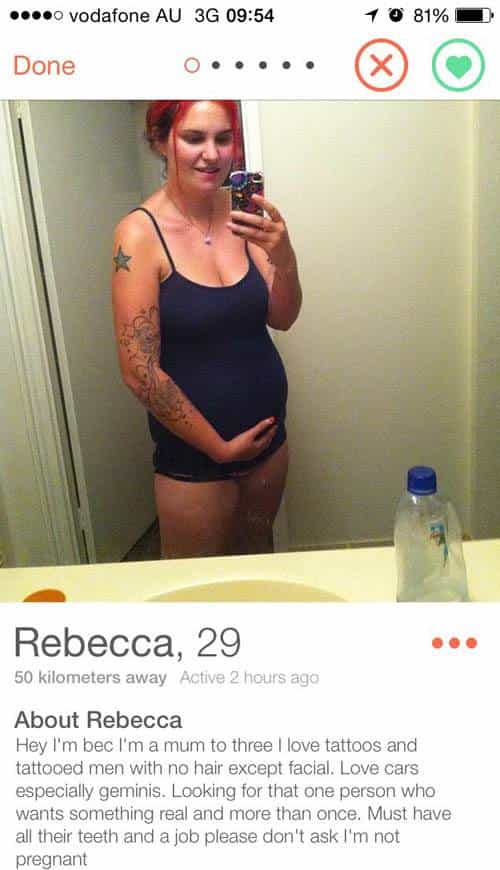
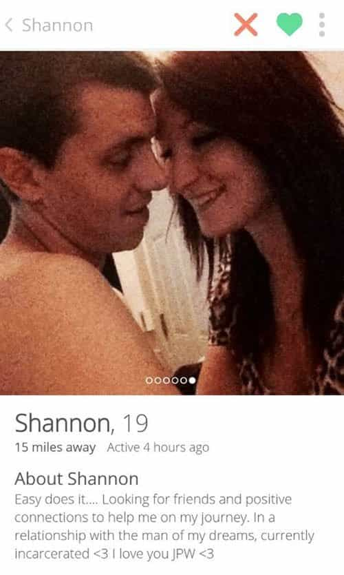

Daryush "Roosh" Valizadeh created ROK in October 2012. You can visit his blog at RooshV.com or follow him on Twitter and Facebook.


I was hanging out with an Italian friend recently when he asked me if I wanted to play “real-life Tinder.” Intrigued, I agreed.
He positioned me at the top of a park staircase and told me to wait. A pair of girls climbed the stairs but did not look at me. “Keep waiting,” he said. Then a girl walked up and locked eye contact with me. I heard a yell from behind, “It’s a match! She swiped right.” It turns out that I’ve been playing real-life Tinder for 15 years without even knowing it.
There are only two steps to real-life Tinder. First, confirm that a girl is paying attention to her environment and not walking fast. This means she installed the real-life Tinder app and wants to play. Then you look at her. If she looks back at you without immediately looking away, you matched her and can start a conversation using a basic opener. If she smiles or gave you a rape stare, you have a super-match and can open with literally anything, even a primordial grunt. (Of course you can approach girls you don’t match with, but the responses will be hit or miss.)
The best thing about real-life Tinder is that there is minimal lag. You never have to wait more than one second for her reply, and if you’re good at reading body language, you’ll perceive instantaneous reactions that approach zero lag. Forget about the frustration of waiting minutes or hours for a reply to come in!

Another benefit of real-life Tinder is that girls rarely have sustained conversations with men they don’t like. If she thinks you’re not her type, she will look away quickly, because the last thing she wants to do is give you encouragement. Compare that to Tinder, where what may appear to be a solid match turns into immediate silence after your opening text. In real-life Tinder, you always get a response, even if it may not be one you prefer.
Real-life Tinder also makes it impossible for a girl to ghost on you while in the middle of a conversation. Due to the laws of physics, it’s simply impossible for a girl to vanish or teleport to another location while she’s standing in front of you. When she wants to leave, she has to say goodbye or give some sort of excuse as to why she’s ending the conversation. In Tinder, she can disappear without any excuse, even if you had what appeared to be a nice conversation, and feel no remorse about displaying anti-social behavior.
But by far the best reason to play real-life Tinder is that you know exactly how she looks like. She won’t be able to defraud you by sharing old or photoshopped photos taken at precise Myspace angles. I only went on one Tinder date in my entire life, and boy did she not look like her photos. In playing real-life Tinder for 15 years, it has never happened that my eyes defrauded or deceived me in any way—not even once!
The argument that Tinder takes less time than real-life Tinder over the long run seems dubious, and even if Tinder was faster, it requires you to stare at a screen that you already stare at for several hours a day. Aren’t we technologically zombified enough? For men who are trapped indoors and don’t have time to play real-life Tinder, I suspect they have bigger problems to solve than meeting women, and should vigorously question their entrapment.
I like to play real-life Tinder when I have a sexual need. I walk out my front door and within five minutes I can begin swiping. I can do 200 swipes within an hour, depending on the time of day, and get a handful of worthy matches. Four hours of real-life Tinder will yield enough leads to keep me busy for a week. Since I’m able to and willing to put in this real-life work, I have no need for the original Tinder.

There’s one final advantage to playing real-life Tinder: you feel like a man doing it. To aid in your live-action hunt, your body produces testosterone, but when playing Tinder, your body halts testosterone production since no hunting ability is required. I believe it’s the lowered testosterone which allows men who exclusively play Tinder to accept the demoralizing behavior of impressing and entertaining girls who are either not that attractive or happen to be secretly fat.
It’s a great feeling to get a real-life match with an attractive girl. Only three feet separate you from her, so you can absorb her entire essence without lag or fakery, and be able to trust your instinct on her value. By comparison, Tinder seems archaic. It introduces unnecessary obstacles that any socially competent man who lives in at least a medium-sized city should feel constrained by, but if you’re a woman, it’s an app from heaven that gives you the attention you desperately crave without having to put forth any social effort.
I can’t help that I love to look at women in the flesh. I enjoy their efforts at attracting men such as myself, assuming they know how, and am titillated when I can sense they are attracted to me and want my penor. Tinder simply doesn’t give me this feeling, so it’s only the real-life game that I will play.
This article was originally published on Roosh V.
Read More: Women Have Reduced Themselves To Sexual Commodities